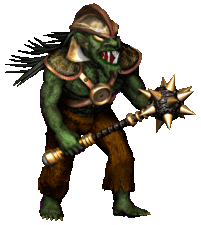
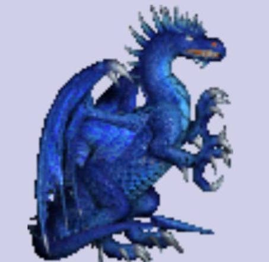
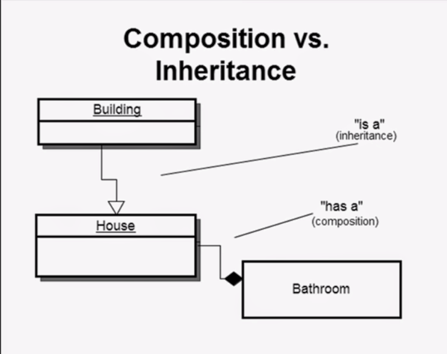

Dragon Slayer
Vi bygger ett litet fantasyspel med fiender och vapen – och använder det för att repetera OOP, enum, abstrakta klasser, interface och composition.

Goblin
DragonHela projektet på GitHub: github.com/malmludvig/DragonSlayer – koden från lektionen, utbyggd till ett RPG i konsolen (se avsnitt 7). Klona repot och öppna DragonSlayer.slnx i Visual Studio.
Lektionsupplägg
| Innehåll | Exempel i spelet |
|---|---|
| OOP-repetition | Klasser, objekt, hälsa och metoder |
| Enum | Fiendens svårighetsgrad |
| Abstract class och arv | Enemy, Goblin och Dragon |
| Interface kontra abstract class | IWeapon, Sword och Bow |
| Composition over inheritance | Spelaren har ett vapen som kan bytas |
| Elevövning | Skapa fiender och vapen |
| Genomgång | Motivera val av arv och composition |
1. OOP – skapa en fiende
Vad behöver en fiende i ett spel?
- Tillstånd: namn och hälsa.
- Beteende: attackera och ta skada.
- Inkapsling: hälsan ändras bara genom
TakeDamage(), som ser till att den aldrig blir negativ.
Klass och objekt: Goblin är en klass – en ritning. Två skapade gobliner är två separata objekt, och var och en har sin egen hälsa.
Goblin first = new Goblin();
Goblin second = new Goblin();
first.TakeDamage(10);
Console.WriteLine(first.Health); // 20
Console.WriteLine(second.Health); // 30 – den andra goblinen är orörd2. Enum – svårighetsgrad
En enum är en egen typ med ett fast antal namngivna värden.
public enum Difficulty
{
Easy,
Medium,
Hard
}Difficulty difficulty = Difficulty.Hard;Fundera: varför är det tydligare än att använda strängar som "hard", "Hard" eller "svår"?
Visa svar
- Bara
Easy,MediumochHardfinns – det går inte att skriva fel värde. - Stavfel som
Difficulty.Hradblir rött i Visual Studio direkt. Ett stavfel i en sträng märks först när programmet körs – om ens då. - Visual Studio föreslår värdena när du skriver
Difficulty. - Ingen behöver gissa om det ska vara stor bokstav, engelska eller svenska.
Använd enumen i en switch
En enum passar perfekt i en switch. Här bestämmer svårighetsgraden hur mycket guld fienden ger:
int GoldFor(Difficulty difficulty)
{
switch (difficulty)
{
case Difficulty.Easy:
return 10;
case Difficulty.Medium:
return 25;
default:
return 50;
}
}
Console.WriteLine(GoldFor(Difficulty.Hard)); // 50
Console.WriteLine(Difficulty.Hard); // Hard- Skriver du ut en enum får du namnet:
Hard. - Visual Studio kan fylla i alla
caseåt dig – skrivswitch, tryck Tab två gånger och skriv in variabeln. - I RPG-versionen ligger samma kod som metoden
GoldReward()iEnemy.
3. Abstract class – olika fiender med en gemensam grund
Alla fiender har namn, hälsa och svårighetsgrad och kan ta skada på samma sätt. Men de attackerar olika. Därför gör vi en abstrakt basklass:
public abstract class Enemy
{
public string Name { get; }
public int Health { get; private set; }
public Difficulty Difficulty { get; }
protected Enemy(string name, int health, Difficulty difficulty)
{
Name = name;
Health = health;
Difficulty = difficulty;
}
public void TakeDamage(int damage)
{
if (damage > 0)
{
Health = Math.Max(0, Health - damage);
}
}
public abstract void Attack();
}Lägg märke till
abstract class– man kan inte skrivanew Enemy(...). Det finns bara konkreta fiender.private set– bara klassen själv kan ändraHealth. Utifrån går det bara viaTakeDamage().Math.Max(0, …)– hälsan blir aldrig mindre än 0.public abstract void Attack();– ingen kropp. Varje fiende måste skriva sin egen.
En konkret fiende
public class Goblin : Enemy
{
public Goblin() : base("Goblin", 30, Difficulty.Easy)
{
}
public override void Attack()
{
Console.WriteLine("Goblinen attackerar med sin klubba!");
}
}Skapa sedan en Dragon på samma sätt. Dess Attack() skriver att draken sprutar eld.
Polymorfism
List<Enemy> enemies = new List<Enemy>
{
new Goblin(),
new Dragon()
};
foreach (Enemy enemy in enemies)
{
enemy.Attack();
}Goblinen attackerar med sin klubba!
Draken sprutar eld!Samma metodanrop – enemy.Attack() – ger olika beteenden beroende på vilken typ objektet faktiskt är.
4. Interface – ett gemensamt kontrakt för vapen
public interface IWeapon
{
int Use();
}Två implementationer:
public class Sword : IWeapon
{
public int Use()
{
Console.WriteLine("Du hugger med svärdet!");
return 10;
}
}
public class Bow : IWeapon
{
public int Use()
{
Console.WriteLine("Du skjuter en pil!");
return 8;
}
}Returvärdet är hur mycket skada vapnet gör.
Abstract class eller interface?
| Koncept | Varför används det här? |
|---|---|
Enemy som abstrakt klass | Fiender delar tillstånd, konstruktor och kod för att ta skada. |
IWeapon som interface | Spelaren behöver bara ett kontrakt för hur ett vapen används. |
| Abstract class | Interface | |
|---|---|---|
| Kan ha fält och färdig kod | Ja | Nej – bara vad som ska finnas |
| Kan ha konstruktor | Ja | Nej |
| Hur många kan en klass ha? | En basklass | Flera interface |
| Beskriver | "är en" – en Goblin är en Enemy | "kan" – ett Sword kan användas som vapen |
5. Composition over inheritance – spelaren har ett vapen

Principen: Composition over inheritance
"In object-oriented programming, composition over inheritance (sometimes composition with forwarding or composite reuse) is a common design pattern that tries to achieve code reuse without requiring inheritance."
På svenska: ett vanligt designmönster för att återanvända kod utan att behöva arv.
Composition over inheritance betyder: bygg hellre ihop en klass av mindre delar än att ärva från en annan klass.
- Arv – "är en". Klassen blir en sorts basklass och får allt den har.
- Composition – "har en". Klassen har ett annat objekt som gör en del av jobbet.
Samma exempel som i bilden, i C#:
// Arv: ett hus ÄR EN byggnad
class Building
{
}
class House : Building
{
}
// Composition: ett hus HAR ETT badrum
class Bathroom
{
}
class House2
{
private Bathroom bathroom = new Bathroom();
}Jätteenkelt exempel: en bil med en motor
Med arv behövs en ny bilklass för varje sorts motor:
class Car { }
class PetrolCar : Car { }
class ElectricCar : Car { }
class HybridCar : Car { } // ... och så vidareMed composition har bilen en motor – och motorn kan bytas:
interface IEngine
{
void Start();
}
class PetrolEngine : IEngine
{
public void Start() { Console.WriteLine("Brum brum!"); }
}
class ElectricEngine : IEngine
{
public void Start() { Console.WriteLine("Bzzzz..."); }
}
class Car
{
public IEngine Engine { get; set; }
public Car(IEngine engine)
{
Engine = engine;
}
public void Drive()
{
Engine.Start();
}
}Car car = new Car(new PetrolEngine());
car.Drive(); // Brum brum!
car.Engine = new ElectricEngine(); // byt motor
car.Drive(); // Bzzzz...Fördelar
| Fördel | Vad det betyder |
|---|---|
| Flexibelt | Delarna kan bytas medan programmet körs – bilen byter motor, spelaren byter vapen. |
| Färre klasser | Ingen ny PetrolCar, ElectricCar, HybridCar … – bara nya motorer. |
| Lätt att bygga ut | En ny motor är en ny klass. Car behöver inte ändras. |
| Återanvändning | Samma ElectricEngine kan sitta i en bil, en båt eller en gräsklippare. |
| Inga långa arvskedjor | Ändrar man i en basklass påverkas alla som ärver. Små delar påverkar bara sig själva. |
Arv är inte fel. Använd arv när det verkligen är "är en" och aldrig ändras – en Goblin är alltid en Enemy. Använd composition när något är en del som kan bytas – en spelare har ett vapen.
Tillbaka till spelet
Diskutera först: vi skulle kunna skapa klasserna SwordPlayer och BowPlayer som ärver från Player.
Fundera: vad händer om spelaren ska kunna byta vapen under spelets gång?
Visa svar
Ett objekt kan inte byta klass. En SwordPlayer förblir en SwordPlayer – vi skulle behöva skapa en helt ny spelare och kopiera över allt. Och för varje nytt vapen behövs en ny spelarklass: WandPlayer, AxePlayer, …
Låt i stället spelaren ha ett vapen:
public class Player
{
public IWeapon Weapon { get; set; }
public Player(IWeapon weapon)
{
Weapon = weapon;
}
public void Attack(Enemy enemy)
{
int damage = Weapon.Use();
enemy.TakeDamage(damage);
}
}Användning:
Player player = new Player(new Sword());
Enemy enemy = new Goblin();
player.Attack(enemy);
player.Weapon = new Bow();
player.Attack(enemy);
Console.WriteLine($"Fiendens hälsa: {enemy.Health}");Du hugger med svärdet!
Du skjuter en pil!
Fiendens hälsa: 12Skillnaden
- En
Goblinär enEnemy→ arv. - En
Playerhar ettIWeapon→ composition. - Vapnet kan bytas utan att klassen
Playerbehöver ändras.
6. Elevövning – bygg ut spelet
- Skapa
Dragonsom ärverEnemy. - Lägg flera fiender i en
List<Enemy>och anropa deras attacker. - Skapa
MagicWandsom implementerarIWeapon. - Låt spelaren attackera med olika vapen.
- Skriv ut fiendens hälsa efter varje attack.
Visa facit
public class Dragon : Enemy
{
public Dragon() : base("Drake", 100, Difficulty.Hard)
{
}
public override void Attack()
{
Console.WriteLine("Draken sprutar eld!");
}
}
public class MagicWand : IWeapon
{
public int Use()
{
Console.WriteLine("Du kastar en eldboll med trollstaven!");
return 15;
}
}
// I Program.cs
List<Enemy> enemies = new List<Enemy>
{
new Goblin(),
new Goblin(),
new Dragon()
};
foreach (Enemy e in enemies)
{
e.Attack();
}
Player player = new Player(new Sword());
Enemy dragon = new Dragon();
player.Attack(dragon);
Console.WriteLine($"{dragon.Name}: {dragon.Health}");
player.Weapon = new Bow();
player.Attack(dragon);
Console.WriteLine($"{dragon.Name}: {dragon.Health}");
player.Weapon = new MagicWand();
player.Attack(dragon);
Console.WriteLine($"{dragon.Name}: {dragon.Health}");Utskrift:
Goblinen attackerar med sin klubba!
Goblinen attackerar med sin klubba!
Draken sprutar eld!
Du hugger med svärdet!
Drake: 90
Du skjuter en pil!
Drake: 82
Du kastar en eldboll med trollstaven!
Drake: 67Varken Player eller Enemy behövde ändras för att lägga till en drake och en trollstav.
Extra utmaning
Låt spelaren välja vapen i en konsolmeny och fortsätta attackera tills fiendens hälsa är noll.
Visa facit
Player player = new Player(new Sword());
Enemy enemy = new Dragon();
while (enemy.Health > 0)
{
Console.WriteLine();
Console.WriteLine($"{enemy.Name} har {enemy.Health} i hälsa.");
Console.WriteLine("1. Svärd");
Console.WriteLine("2. Pilbåge");
Console.WriteLine("3. Trollstav");
Console.Write("Välj vapen: ");
string choice = Console.ReadLine();
if (choice == "1")
{
player.Weapon = new Sword();
}
else if (choice == "2")
{
player.Weapon = new Bow();
}
else if (choice == "3")
{
player.Weapon = new MagicWand();
}
else
{
Console.WriteLine("Ogiltigt val.");
continue;
}
player.Attack(enemy);
if (enemy.Health > 0)
{
enemy.Attack();
}
}
Console.WriteLine($"{enemy.Name} är besegrad!");Klart när
- ☐
GoblinochDragonärver frånEnemyoch attackerar på olika sätt. - ☐ En loop över en
List<Enemy>anropar alla fienders attacker. - ☐
Sword,BowochMagicWandimplementerarIWeapon. - ☐ Spelaren kan byta vapen, och fiendens hälsa skrivs ut efter varje attack.
- ☐ Hälsan blir aldrig negativ.
7. Spela hela spelet – Dragon Slayer RPG
I GitHub-repot har koden från lektionen byggts ut till ett litet RPG i konsolen. Starta programmet och välj 1. Spela Dragon Slayer – eller 2 för att köra exemplen från lektionen.
Drakkungen härjar i landet. Bli stark nog att besegra honom!
| Val | Vad händer |
|---|---|
| Gå på äventyr | Slåss mot en goblin, ett troll eller en drake. Vinn guld och få 10 mer i maxhälsa. |
| Vila vid lägerelden | Full hälsa – men ibland smyger en goblin fram ur mörkret. |
| Besök handlaren | Köp läkedrycker (15 guld), en trollstav (40 guld) eller en stridsyxa (100 guld). |
| Utmana Drakkungen | Slutbossen. Besegra honom och vinn spelet. |
I striden kan du attackera, dricka en läkedryck (+40 hälsa) eller försöka fly (50 % chans).
| Fiende | Hälsa | Skada | Svårighet | Guld |
|---|---|---|---|---|
Goblin | 30 | 5 | Easy | 10 |
Troll | 60 | 9 | Medium | 25 |
Dragon | 100 | 10 | Hard | 50 |
DragonKing | 180 | 16 | Hard | 50 |
Det här är nytt i koden
Fienderna måste kunna skada spelaren. Därför får Enemy en abstrakt egenskap – varje fiende måste säga hur hårt den slår:
// I Enemy
public abstract int Damage { get; }
// I Goblin
public override int Damage => 5;Svårighetsgraden bestämmer hur mycket guld fienden ger. Här gör enumen verklig nytta:
public int GoldReward()
{
switch (Difficulty)
{
case Difficulty.Easy:
return 10;
case Difficulty.Medium:
return 25;
default:
return 50;
}
}Spelaren får hälsa, guld och läkedrycker. Precis som hos fienden ändras hälsan bara genom metoder:
public int Health { get; private set; }
public int MaxHealth { get; private set; }
public int Gold { get; set; }
public int Potions { get; set; }
public void TakeDamage(int damage) { ... } // aldrig under 0
public void Heal(int amount) { ... } // aldrig över MaxHealth
public void LevelUp() { ... } // +10 maxhälsa efter varje seger| Fil | Innehåll |
|---|---|
Troll.cs, DragonKing.cs | Två nya fiender – ärver Enemy |
Axe.cs | Nytt vapen – implementerar IWeapon |
Game.cs | Spelet: menyn, striderna, vilan och handlaren |
Examples.cs | Exemplen från lektionen, steg för steg |
Lägg märke till att Game aldrig frågar vilken fiende det är när den slåss – den anropar bara enemy.Attack() och enemy.Damage. Och spelaren byter vapen hos handlaren utan att Player ändras. Samma idéer som i lektionen – arv, polymorfism och composition.
Bygg vidare
- Lägg till en ny fiende, till exempel en
Skeleton. Vad behöver du ändra iGame.cs? - Lägg till ett nytt vapen hos handlaren.
- Låt Drakkungen göra dubbel skada var tredje runda.
8. Ladda fiender från en JSON-fil
I stället för att skriva in i koden vilka fiender som finns kan vi läsa in dem från en fil. Då kan man ändra spelet utan att ändra koden.
Filen enemies.json
[
"Goblin",
"Goblin",
"Goblin",
"Troll",
"Troll",
"Dragon"
]En lista med namn. Ett namn som står flera gånger dyker upp oftare – här är goblinen vanligast och draken ovanligast.
I Visual Studio: högerklicka på enemies.json → Properties → Copy to Output Directory: Copy if newer. Annars hittar programmet inte filen.
Läs in filen
using System.Text.Json;
public static class EnemyLoader
{
public static List<string> LoadNames(string path)
{
string json = File.ReadAllText(path);
return JsonSerializer.Deserialize<List<string>>(json);
}
// Gör om ett namn från JSON-filen till ett riktigt fiendeobjekt
public static Enemy Create(string name)
{
switch (name)
{
case "Goblin":
return new Goblin();
case "Troll":
return new Troll();
case "Dragon":
return new Dragon();
default:
throw new ArgumentException($"Okänd fiende: {name}");
}
}
}File.ReadAllTextläser hela filen som en sträng.JsonSerializer.Deserialize<List<string>>gör om JSON-texten till enList<string>.Creategör om namnet till ett objekt. KlassernaGoblin,TrollochDragonär precis som förut.
Använd det
List<string> names = EnemyLoader.LoadNames("enemies.json");
foreach (string name in names)
{
Enemy enemy = EnemyLoader.Create(name);
enemy.Attack();
}Goblinen attackerar med sin klubba!
Goblinen attackerar med sin klubba!
Goblinen attackerar med sin klubba!
Trollet slår med en trädstam!
Trollet slår med en trädstam!
Draken sprutar eld!I spelet väljs ett slumpat namn ur listan varje gång du går på äventyr:
string name = enemyNames[Random.Shared.Next(enemyNames.Count)];
return EnemyLoader.Create(name);Varför läser vi bara in namnen, och skapar ett nytt objekt varje gång? Varje strid behöver en fiende med full hälsa. Hade vi återanvänt samma objekt hade draken redan varit död andra gången du mötte den.
Prova: ändra i enemies.json så att det kommer fler drakar – utan att röra koden.
När ska vi använda vad?
| Använd när … | Kännetecken | I spelet | |
|---|---|---|---|
| Abstract class | klasserna är samma sorts sak och delar data och kod | Fält, konstruktor och färdiga metoder. En klass kan bara ärva en basklass. | Goblin och Dragon är fiender – de ärver Enemy och delar Health och TakeDamage(). |
| Interface | olika klasser ska kunna samma sak, men gör det på eget sätt | Bara ett kontrakt – ingen gemensam kod. En klass kan ha flera interface. | Sword, Bow och MagicWand kan användas – de implementerar IWeapon. |
| Composition | något är en del som ska kunna bytas | Klassen har ett annat objekt som en egenskap, ofta av en interface-typ. | Spelaren har ett vapen – Player.Weapon – som kan bytas under spelet. |
Fråga dig
- "Är en" och delar kod? → abstract class
- "Kan" – samma förmåga hos olika klasser? → interface
- "Har en" – en del som kan bytas? → composition
Ofta används alla tre tillsammans – precis som i Dragon Slayer.
Genomgång
"Varför ärver goblinen från Enemy, medan spelaren har ett separat vapenobjekt?"
Visa svar
- En goblin är alltid en fiende – det ändras aldrig. Den delar hälsa och
TakeDamage()med alla andra fiender. Då passar arv. - En spelare har ett vapen, och vapnet kan bytas under spelets gång. Då passar composition: spelaren pratar bara med
IWeaponoch bryr sig inte om vilket vapen det är. - Tumregel: "är en" → arv. "har en" eller "kan bytas" → composition.